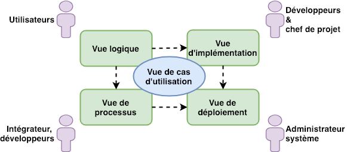
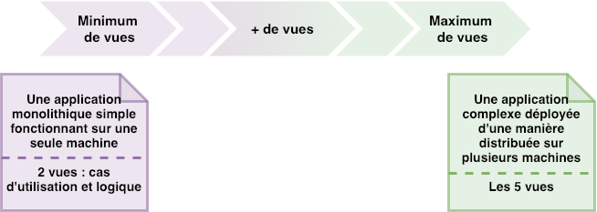
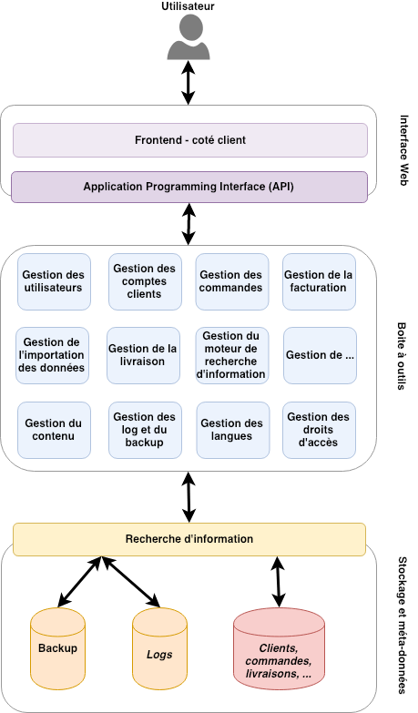
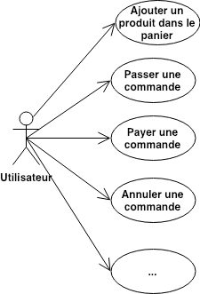
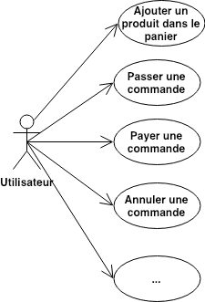

Architecture logicielle sur base de la méthode architecture 4+1 vues
Rami Sellami
CETIC, Belgique, le 21/01/2019
Modèle d'architecture 4 + 1 vues
- Proposé par Philippe Kruchten en 1995
- Décrire l'architecture logicielle en se basant sur plusieurs vues d'un point de vue de différentes parties prenantes (par exemple utilisateur, développeur, chef de projet, ...)
- Une vue est une description complète et simplifiée du système d'un point de vue bien défini
- Intérêt
- Compatible avec la notation UML
- Démarche favorable à l'utilisation de diagrammes
- Pragmatique : ne documenter que ce qui est utile
- Assez facile à comprendre pour des "non techniques"


Vue logique
- La vue la plus connue de l'architecture (Souvent réalisée hors du 4+1 vues)
- Contenu
- Une vue « désincarnée », abstraite de l'architecture
- Peut suivre une découpe fonctionnelle
- Peut suivre une découpe orientée objets
- Format suggéré
- Diagramme global
- Diagrammes de classes
- Diagramme de communication
- Diagramme d'objets

Vue de processus
- Exprimer la dynamicité du système
- Contenu :
- Décrire les interactions entre processus/threads/tâches
- Expliciter les relations entre tâches (attentes, synchronisations), les allocations / dé-allocations, les exigences non fonctionnelles (concurrence, performance, ...)
- Formats suggérés (tout diagramme susceptible d'exprimer la communication et les changements d'état) :
- Diagrammes de communication / collaboration
- Diagrammes états - transitions
- Diagrammes d'activité

Vue d'implémentation
- Organisation des modules logiciels sous forme de composants
- Composants réutilisés ou à réaliser
- Expression des relations entre ces composants (hiérarchie, contraintes, héritage, ...)
- Contenu :
- Vue logique « instanciée » (noms des composants ajoutés)
- Informations de configuration (versions retenues, auteurs/sources, ...)
- Formats suggérés :
- Diagramme de composants
- Diagramme de paquetages

Vue de déploiement
- Exprimer comment est déployé le système (Contribue mais ne suffit pas à décrire l'installation)
- Contenu :
- Décrire la répartition spatiale
- Enumérer les contraintes (Pare-feu, bande passante, ...)
- Décrire la scalabilité et la tolérance aux pannes
- Formats suggérés :
- Diagrammes de déploiement
- Diagrammes de composants (complétés avec la répartition spatiale et les contraintes)

Vue de cas d'utilisation
- Cas normal : comment tout s'enchaine
- Sélection d'un sous ensemble des cas d'utilisations définis dans les spécifications pour :
- Décrire les interactions entre éléments du système (objets / composants / processus)
- Illustrer et valider le design d'architecture
- Attention de ne pas réécrire les spécifications du système
- Sélection d'un sous ensemble des cas d'utilisations définis dans les spécifications pour :
- Cas « start-up avec cahier des charges sur la nappe »
- L'architecture est le seul document qui sera écrit ... autant y ajouter les cas d'utilisations vitaux pour la réalisation
- Formats suggérés :
- Diagrammes de séquence
- Diagramme de cas d'utilisation (et diagrammes attenants)
 

|
Aéropole de Charleroi-Gosselies Avenue Jean Mermoz 28 B-6041 Charleroi - Belgique
|
Architecture logicielle à base de la méthode architecture 4+1 vues
|